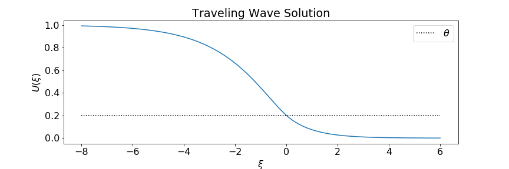
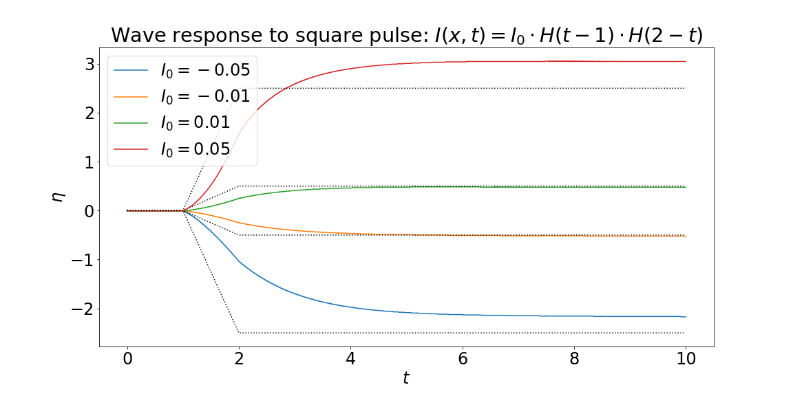
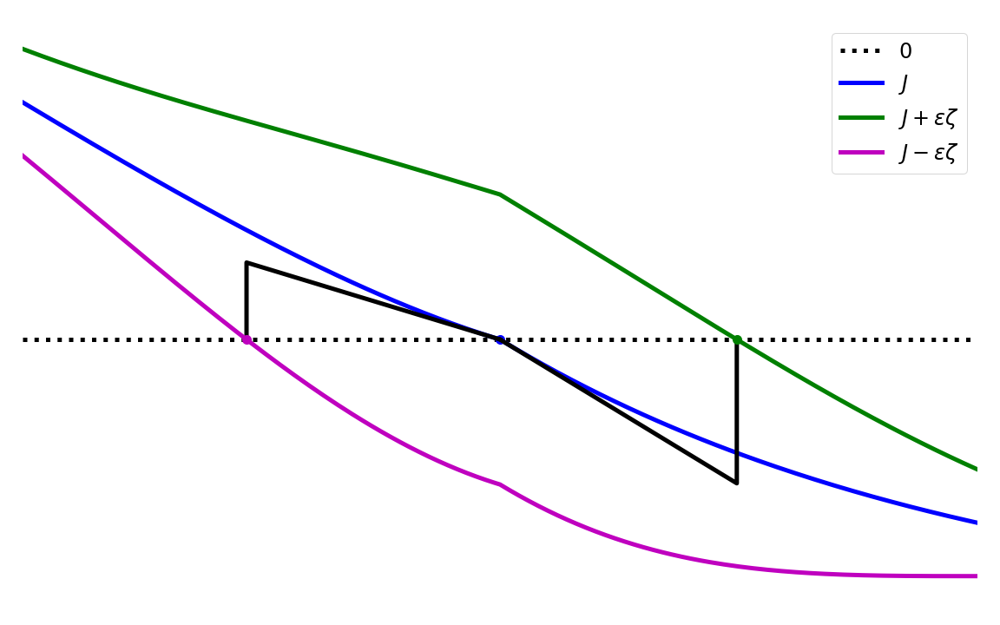

The Wave Response Function in an Adaptive Neural Field Model
Sage Shaw - CU Boulder
Outline
- Kilpatrick & Ermentrout 2012
- Adaptive Model
- Wave Responses
- Where I'm at now
- What's next?
Kilpatrick & Ermentrout 2012

Source: Pinto et al. 2005
One dimensional model:
$\color{gray}{\mu} \color{green}{u}_t = - \color{green}{u} + \int_\mathbb{R} \color{yellow}{w}(x,y) \cdot \color{magenta}{f}[ \color{green}{u}(y) ] \ dy$
- $\color{green}{u}(x,t)$ - Measure of neuronal activity
- $\color{gray}{\mu}$ - time constant
- $\color{yellow}{w}(x,y)$ - A weight function describing spatial connectivity
- $\color{magenta}{f}$ - A non-linear firing-rate function
$\mu u_t = -u + \int_{\mathbb{R}} \frac{1}{2}e^{-|x-y|}\cdot H[u(y) - \theta] \ dy$
$\mu u_t = -u + \int_{\mathbb{R}} \frac{1}{2}e^{-|x-y|}\cdot H[u(y) - \theta] \ dy + \color{green}{I(x,t)}$
$I(x,t) = 0.15 \delta(t - 1)$
Adaptive Model
Previous model:
$\mu u_t = -u + w * f(u)$
Adaptive model:
\begin{align*} \color{gray}{\mu} \color{green}{u}_t &= -\color{green}{u} + \color{yellow}{w} * \color{magenta}{f}(\color{green}{u}-a) \\ \color{gray}{\alpha} a_t & = -a + \color{gray}{\gamma} \color{magenta}{f}(\color{green}{u} - a) \end{align*}
- $\color{green}{u}(x,t)$ - Measure of electrical activity
- $\color{yellow}{w}(x,y)$ - Weight function
- $\color{magenta}{f}$ - firing-rate function
- $a(x,t)$ - hyper-polarizing adaptation
- $\color{gray}{\mu}, \color{gray}{\alpha}$ - time constants
- $\color{gray}{\gamma}$ - adaptation strength constant
Traveling pulse solution:
- Constant along characteristics: $u(x,t) = U(\xi)$ where $\xi = x - ct$
- Crosses threshold twice: $U(0)-A(0) = U(-\Delta)-A(-\Delta) = \theta$
- Vanishing boundary conditions $\lim\limits_{\xi \to \pm \infty} U(\xi) = \lim\limits_{\xi \to \pm \infty} A(\xi) = 0$.
This gives us a coupled system of first order ODEs, with piecewise smooth forcing terms.
Traveling Pulse Solution
$$\begin{align*} u(x,t) = U{\left(\xi \right)} &= \begin{cases} \frac{\left(- \frac{e^{\Delta}}{\mu c - 1} + \frac{1}{\mu c - 1}\right) e^{\xi}}{2} + \frac{\left(\mu^{2} c^{2} e^{\frac{\Delta}{\mu c}} - \mu^{2} c^{2} - \frac{\mu c}{2} + \theta \left(\mu^{2} c^{2} - 1\right) + \frac{\left(\mu c - 1\right) e^{- \Delta}}{2} + \frac{1}{2}\right) e^{\frac{\xi}{\mu c}}}{\mu^{2} c^{2} - 1} & \text{for}\: \xi < - \Delta \\\left(\theta + \frac{- \mu^{2} c^{2} - \frac{\mu c}{2} + \left(\frac{\mu c}{2} - \frac{1}{2}\right) e^{- \Delta} + \frac{1}{2}}{\mu^{2} c^{2} - 1}\right) e^{\frac{\xi}{\mu c}} + 1 - \frac{e^{- \Delta} e^{- \xi}}{2 \left(\mu c + 1\right)} + \frac{e^{\xi}}{2 \left(\mu c - 1\right)} & \text{for}\: -\Delta \le \xi < 0 \\\frac{\left(1 - e^{- \Delta}\right) e^{- \xi}}{2 \left(\mu c + 1\right)} & 0 \le \xi \end{cases}\\ a(x,t) = A{\left(\xi \right)} &= \begin{cases} \gamma \left(e^{\frac{\Delta}{\alpha c}} - 1\right) e^{\frac{-\xi}{\alpha c}} & \text{for}\: \xi < - \Delta \\\gamma \left(1 - e^{\frac{-\xi}{\alpha c}}\right) & \text{for}\: - \Delta \le \xi < 0 \\0 & 0 \le \xi \end{cases}\\ \xi &= x - c t\\ e^{\Delta} &= - \frac{1}{2 \theta \left(\mu c + 1\right) - 1}, \end{align*}$$ where $c$ is given implicitly by $$\begin{align*} 0 &= - \gamma \left(1 - \left(- \frac{1}{2 \theta \left(\mu c + 1\right) - 1}\right)^{- \frac{1}{\alpha c}}\right) - \theta + 1 - \frac{1}{2 \left(\mu c + 1\right)} + \frac{2 \theta \left(- \mu c - 1\right) + 1}{2 \left(\mu c - 1\right)} + \left(- \frac{1}{2 \theta \left(\mu c + 1\right) - 1}\right)^{- \frac{1}{\mu c}} \left(\theta - \frac{\mu^{2} c^{2} + \frac{\mu c}{2} - \left(\frac{\mu c}{2} - \frac{1}{2}\right) \left(2 \theta \left(- \mu c - 1\right) + 1\right) - \frac{1}{2}}{\mu^{2} c^{2} - 1}\right). \end{align*}$$
Wave Responses
We apply a small stimulus $\begin{align*} \mu u_t &= -u + w * f(u-a) \color{green}{+ \varepsilon I(x,t)} \\ \alpha a_t & = -a + \gamma f(u- a) \end{align*}$
and assume the solution has the form $\begin{align*} u(x,t) &= U\big(\xi - \varepsilon \eta(t) \big) + \varepsilon u_1(x,t) + \mathcal{O}(\varepsilon^2) \\ a(x,t) &= A\big(\xi - \varepsilon \eta(t) \big) + \varepsilon a_1(x,t) + \mathcal{O}(\varepsilon^2) \\ \end{align*}$
Collecting the $\mathcal{O}(1)$ terms gives $\begin{align*} -c\mu U_\xi &= -U + \int_\mathbb{R} w(\xi, y) f\big[ U(y) - A(y) \big] \ dy \\ -c\alpha A_\xi &= -A + \gamma \int_\mathbb{R} w(\xi, y) f\big[U(y) - A(y) \big] \ dy, \end{align*}$
which implies that $U$ and $A$ are the traveling pulse solution to the un-perturbed system.
Collecting the $\mathcal{O}(\varepsilon)$ terms gives the following solvability condition on $\mathbf{u}^T = [u_1, a_1]$:
$$\begin{align*} \begin{bmatrix}\mu&0\\0&\alpha\end{bmatrix} \mathbf{u}_t + \underbrace{\mathbf{u} - c\begin{bmatrix}\mu&0\\0&\alpha\end{bmatrix} \mathbf{u}_\xi - \begin{bmatrix}1&-1\\ \gamma&-\gamma\end{bmatrix} \int_\mathbb{R} w(\xi,y)f'\big(U(y) - A(y)\big) \mathbf{u}(y) \ dy}_{\mathcal{L} \mathbf{u}} &= \begin{bmatrix}-\mu U_\xi \eta_t + I \\ -\alpha A_\xi \eta_t \end{bmatrix} \end{align*}$$
A bounded solution will exist if the RHS is orthogonal to the null-space of $\mathcal{L}^*$:
$$ \mathcal{L}^* \mathbf{v} = \mathbf{v} + c \begin{bmatrix}\mu&0\\0&\alpha\end{bmatrix} \mathbf{v}_\xi - f'\big(U(\xi) - A(\xi)\big) \begin{bmatrix}1&\gamma \\ -1 &-\gamma\end{bmatrix} \int_\mathbb{R} w(y, \xi) \mathbf{v}(y) \ dy. $$
A bounded solution will exist if the RHS is orthogonal to the null-space of $\mathcal{L}^*$:
$$ \mathcal{L}^* \mathbf{v} = \mathbf{v} + c \begin{bmatrix}\mu&0\\0&\alpha\end{bmatrix} \mathbf{v}_\xi - f'\big(U(\xi) - A(\xi)\big) \begin{bmatrix}1&\gamma \\ -1 &-\gamma\end{bmatrix} \int_\mathbb{R} w(y, \xi) \mathbf{v}(y) \ dy. $$
This uniquely determines the wave response function.
Again, we take
$\begin{align*} f(\cdot) &= H(\cdot - \theta) \\ w(x,y) &= \frac{1}{2} e^{-|x-y|} \end{align*}$
and our asymptotic approximation is $$\eta(t) = \frac{\mu c+1}{\mu^2 c \theta} \int_0^t \int_0^\infty e^{-\xi/c\mu} I(\xi, t) \ d\xi \ d\tau$$
Again, we take
$\begin{align*} f(\cdot) &= H(\cdot - \theta) \\ w(x,y) &= \frac{1}{2} e^{-|x-y|} \end{align*}$
and our asymptotic approximation is $$\eta(t) = \frac{\mu c+1}{\mu^2 c \theta} \int_0^t \int_0^\infty e^{-\xi/c\mu} I(\xi, t) \ d\xi \ d\tau$$
Or at least, I thought it was.
Spatially homogeneous $\delta$-pulse: $I(x,t) = I_0 \delta(t - t_0)$.

Spatially homogeneous square-pulse: $I(x,t) = I_0 \cdot H(t-t_0) \cdot H(t_f - t)$.
Spatially localized $\delta$-pulse: $I(x,t) = I_0 \delta(t - t_0) \cdot H( \Delta x - |x - x_p|) $.

Where we're at now
Define $J = U - A$
then take $f(J) = H(J - \theta)$.
\begin{align*}f'(J(\xi)) &= \frac{\delta(\xi)}{J'(0)} + \frac{\delta(\xi + \Delta)}{J'(-\Delta)}\end{align*}
However, $J$ has cusps at $\xi = 0, -\Delta$

To fix this, we will plan to take a two-sided linearization of the Heaviside function.
What's next?
- Try this two-sided linearization in the adjoint method.
- Finish the stability analysis
- Address the non-uniquness of solutions
- Large stimuli
- Wave genesis
- 2D
References